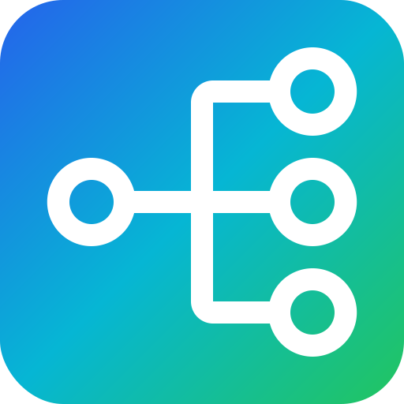

Group your dataflows into projects with collaborators, and keep the work moving with lightweight per-project tasks — each with a priority and a status — so the plan lives right next to the data it produces.
See it in the demoProjects give your dataflows a home: a name, a description, a research type, and a list of collaborators. Tasks track the work to be done against that project, each carrying a priority (low, medium, urgent) and a status (pending, ongoing, done).